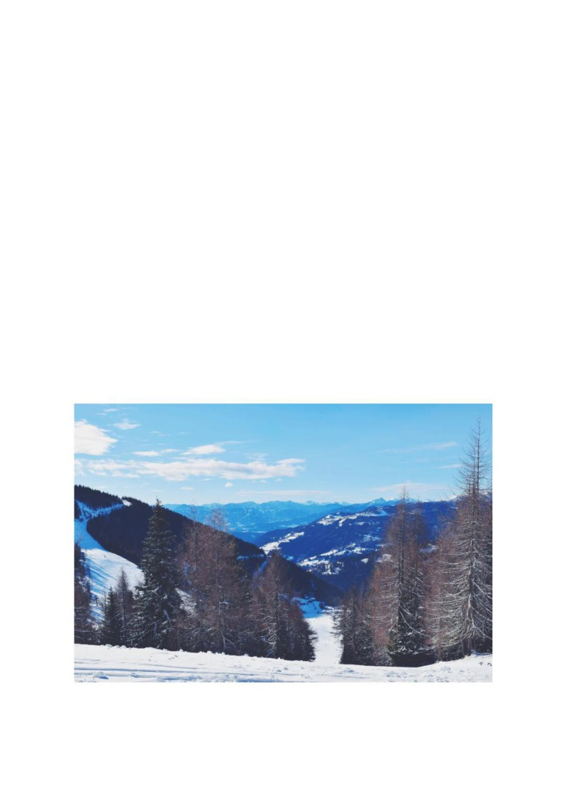
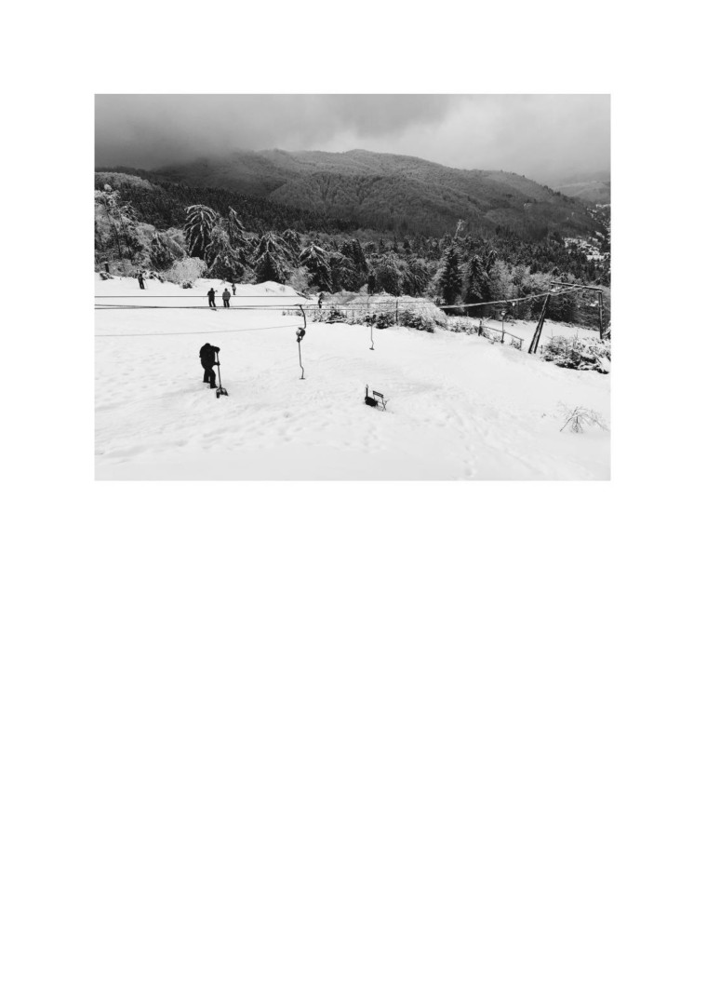
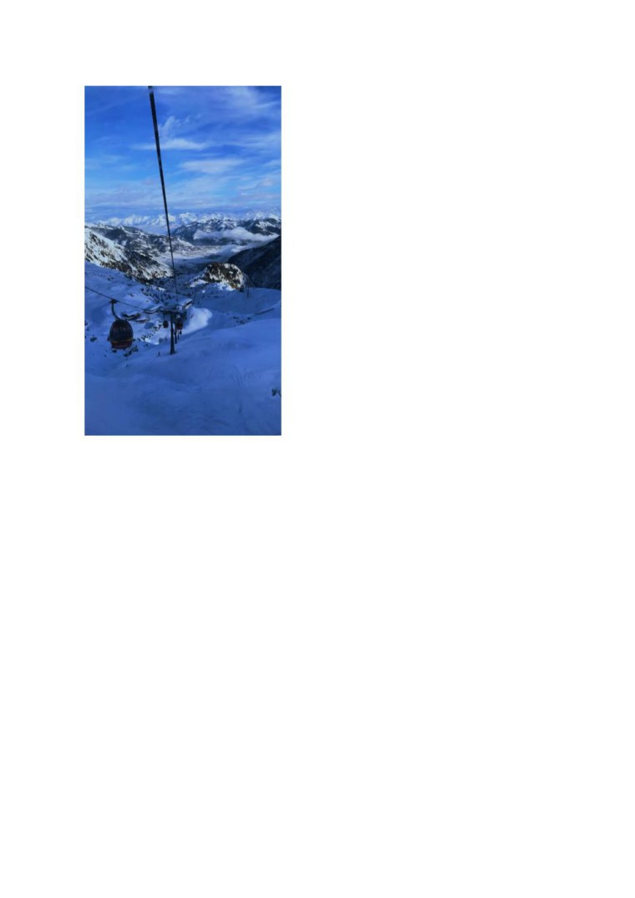

Sfaturi pentru o excursie reușită la schi
Cu toții vrem să avem o excursie cu cât mai puține probleme când mergem la schi, să
nu uităm nimic atunci când ne gândim ce să ne punem în bagaj.
Fiind pasionat de sporturile de iarnă, în special de schi și snowboard și schiind pe mai
multe pârtii de schi, atât în țară, la Cavnic, Șuior și Arieșeni, cât și în străinătate, în Slovacia și
Austria, am decis să vă dau câteva sfaturi pentru a avea o experiență cât mai plăcută pe timpul
excursiei.
În primul rând, nu merge niciodată singur. Toată lumea știe că cele mai frumoase
experiențe le trăiețti alături de cei dragi, așa că tot timpul să îți faci excursiile cu un grup de
prieteni, vei avea mult mai multe amintiri și experiențe frumoase așa.
Dacă ți-ai făcut grupul, acum urmează să cauți cazarea. Depinzând de preferințele tale
și de buget, poți alege să te cazezi la hotel, pensiune sau cabană. Personal, cele mai faine
momente le-am avut când am mers cu prietenii la o cabană, fiind singuri în toată proprietatea,
am putut sta până la ce oră am vrut, fără să deranjăm pe nimeni și ne-am putu găti ce voiam,
fără să depindem de un meniu prestabilit. Pe lângă tipul de cazare, mai contează și locația;
bine-nțeles că spațiile de închiriere care sunt în proximitatea pârtiei vor fi mai scumpe și cel
mai probabil ocupate, dacă nu îți faci rezervare din timp, însă dacă nu te deranjează o
plimbare de dimineață până la pârtie, poți alege și locații mai periferice, care vor fi și mai
ieftine, însă din nou, aceste detalii țin foarte mult și de preferințele personale și de buget.
(O parte din pârtiile de la Zell am See, Austria)

(Pârtia “Rainer”, Cavnic, România)
Bun, acum că știm unde mergem și cu cine, să ne gândim ce ne punem în bagaj. Ca să
nu îngheți de frig, din bagajul tău nu trebuie să lipsească șosete, de preferat groase și mai
lungi, o pereche de pantaloni și bluză cu mânecă lungă din poliester, peste care vine o bluză
din material mai gros, precum lâna sau o bluză groasă din bumbac. După ce hainele de
interior sunt gata, urmează, bine-nțeles, costumul de schi, adică geaca și pantalonii aceia care
par cu două mărimi mai mari și te fac să arâți ca omulețul de la Michelin. Acetea trebuie să
aibă nivelul de impermeabilitate și cel de respirabilitate cât mai ridicat. La gât este
recomandat să se poarte o cagulă, pentru a evita pe cât posibil răcelile, iar pe cap o căciulă,
peste care nu poate lipsi casca de protecție, mai ales la copii și începători. Aproape uitasem de
mănuși, care nici ele nu trebuie să lipsească, în comparație cu ochelrii de schi, care nu
reprezintă o necesitate așa de importantă, însă pe caz de ceață, ninsori sau vânt, îți ușurează
exponențial viața. Ultima parte din echipament, dar fără de care singura pârtie pe care poți
ajunge este cea de sănii, sunt schiurile sau snowboardul. Aceste bucăți de grafit, metal și
plastic trebuie să îți fie în general până la bărbie sau mai mici, cu cât sunt mai lungi, cu atăt ai
un control mai slab asupra lor. Dacă alegi să te dai cu schiurile, vei avea nevoie și de o
pereche de clăpari (un fel de “ghete” rigide, din plastic, care îți vor îngreuna mersul și te vor
face să semeni mai mult cu Iron Man) și optional poți să îți cumperi și bețe. Persoanl îmi
place să schiez cu bețe, deoarece sunt unele bucăți din pârtii care nu au un unghi de înclinație
mare și atunci mă ajută foarte mult faptul că mă împing cu bețele în zăpadă. Dacă alegi să te
dai cu snowboardul, vei avea nevoie de o pereche de boots, care sunt mai comfortabili decât
clăparii.

Acum că totul e pregătit, tot ce pot să mai
facă e să vă spun câteva “Tips & Tricks” pe care
le-am învățat pe parcursul acestor zece ani de când
practic aceste sporturi. Este bine să ai mereu un
ghiozdan la tine, în care să îți pui un termos cu ceai
sau o ploscă cu
“cafea alpină”
(adică
Jägermeister). Pe lângă lichide, nu strică să ai și
câteva snacksuri și mai important, o hartă a
versantului, să știi mereu unde te aflii. Dar ca să
ajungi în vârf, prima dată trebuie să îți cumperi
urcări. Cel mai rentabil este să îți iei acces
nelimitat pe toată ziua, asta dacă vrei să schiezi
toată ziua respective, dacă nu, cel mai efficient este
să te uiți cât de lungă este coada la telesacun sau
teleschi, și cât de mult vrei să ted ai, iar pe baza
asta îți iei numărul de urcări.
Un ultim detaliu, pârtiile sunt împărțite în
trei culori, în funcție de gradul lor de dificultate,
care este bazat pe lățimea pârtiei și unghiul de
înclinație. Părtiile albastre sunt cele mai ușoare,
recomandat pentru cei începători, pârtiile roșii, cu
un nivel mai mare de dificultate, recomandat pentru
(Tirol, Austria)
cei intermediari și nu în cele din urmă, pârtiile negre,
cu cel mai mare grad de dificultate, pe care este recomandat să cobori numai dacă ești destul
de experimentat în ale schiatului.
Acesta a fost “ghidul” meu, sper că v-a ajutat și că v-ați distrat în excuriile voastre!